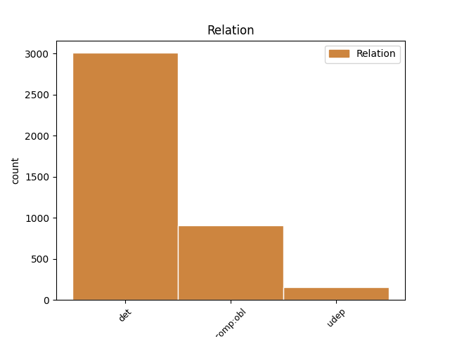
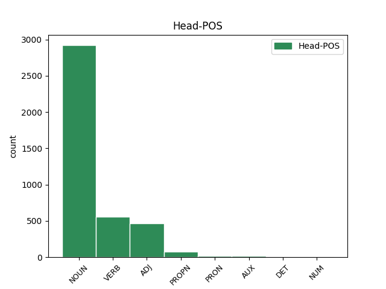
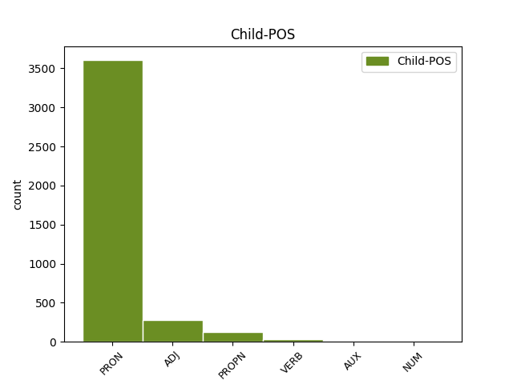

Distribution of features within this leaf



Agreement Rules sorted by frequency.
- When the dependent token is the determiner(det) of the head token, and the dependent token is PRON.
1 ἐγὼ _ _ _ _ 0 _ _ _
2 Ἰησοῦς _ _ _ _ 0 _ _ _
3 ἔπεμψα _ _ _ _ 0 _ _ _
4 τὸν _ _ _ _ 0 _ _ _
5 ἄγγελόν ἄγγελος NOUN Nb Case=Acc|Gender=Masc|Number=Sing 0 _ _ _
6 μου ἐγώ PRON Pp Case=Gen|Gender=Masc|Number=Sing|Person=1|PronType=Prs 5 det _ ref=REV_22.16
7 μαρτυρῆσαι _ _ _ _ 0 _ _ _
8 ὑμῖν _ _ _ _ 0 _ _ _
9 ταῦτα _ _ _ _ 0 _ _ _
10 ἐπὶ _ _ _ _ 0 _ _ _
11 ταῖς _ _ _ _ 0 _ _ _
12 ἐκκλησίαις _ _ _ _ 0 _ _ _
1 καὶ _ _ _ _ 0 _ _ _
2 ὅτε _ _ _ _ 0 _ _ _
3 ἤκουσα _ _ _ _ 0 _ _ _
4 καὶ _ _ _ _ 0 _ _ _
5 ἔβλεψα _ _ _ _ 0 _ _ _
6 ἔπεσα _ _ _ _ 0 _ _ _
7 προσκυνῆσαι _ _ _ _ 0 _ _ _
8 ἔμπροσθεν _ _ _ _ 0 _ _ _
9 τῶν _ _ _ _ 0 _ _ _
10 ποδῶν _ _ _ _ 0 _ _ _
11 τοῦ _ _ _ _ 0 _ _ _
12 ἀγγέλου _ _ _ _ 0 _ _ _
13 τοῦ _ _ _ _ 0 _ _ _
14 δεικνύοντός δείκνυμι VERB V- Case=Gen|Gender=Masc|Number=Sing|Tense=Pres|VerbForm=Part|Voice=Act 0 _ _ _
15 μοι ἐγώ PRON Pp Case=Dat|Gender=Masc|Number=Sing|Person=1|PronType=Prs 14 comp:obl _ ref=REV_22.8
16 ταῦτα _ _ _ _ 0 _ _ _
1 Πέτρος Πέτρος PROPN Ne Case=Nom|Gender=Masc|Number=Sing 0 _ _ _
2 ἀπόστολος _ _ _ _ 0 _ _ _
3 Ἰησοῦ _ _ _ _ 0 _ _ _
4 Χριστοῦ _ _ _ _ 0 _ _ _
5 ἐκλεκτοῖς _ _ _ _ 0 _ _ _
6 παρεπιδήμοις παρεπίδημος ADJ A- Case=Dat|Degree=Pos|Gender=Masc|Number=Plur 1 comp:obl _ ref=1PET_1.1
7 διασπορᾶς _ _ _ _ 0 _ _ _
8 Πόντου _ _ _ _ 0 _ _ _
9 Γαλατίας _ _ _ _ 0 _ _ _
10 Καππαδοκίας _ _ _ _ 0 _ _ _
11 Ἀσίας _ _ _ _ 0 _ _ _
12 καὶ _ _ _ _ 0 _ _ _
13 Βιθυνίας _ _ _ _ 0 _ _ _
14 κατὰ _ _ _ _ 0 _ _ _
15 πρόγνωσιν _ _ _ _ 0 _ _ _
16 θεοῦ _ _ _ _ 0 _ _ _
17 πατρός _ _ _ _ 0 _ _ _
18 ἐν _ _ _ _ 0 _ _ _
19 ἁγιασμῷ _ _ _ _ 0 _ _ _
20 πνεύματος _ _ _ _ 0 _ _ _
21 εἰς _ _ _ _ 0 _ _ _
22 ὑπακοὴν _ _ _ _ 0 _ _ _
23 καὶ _ _ _ _ 0 _ _ _
24 ῥαντισμὸν _ _ _ _ 0 _ _ _
25 αἵματος _ _ _ _ 0 _ _ _
26 Ἰησοῦ _ _ _ _ 0 _ _ _
27 Χριστοῦ _ _ _ _ 0 _ _ _
1 μέτοχοι μέτοχος ADJ A- Case=Nom|Degree=Pos|Gender=Masc|Number=Plur 0 _ _ _
2 γὰρ _ _ _ _ 0 _ _ _
3 τοῦ _ _ _ _ 0 _ _ _
4 Χριστοῦ Χριστός PROPN Ne Case=Gen|Gender=Masc|Number=Sing 1 comp:obl _ ref=HEB_3.14
5 γεγόναμεν _ _ _ _ 0 _ _ _
6 ἐάνπερ _ _ _ _ 0 _ _ _
7 τὴν _ _ _ _ 0 _ _ _
8 ἀρχὴν _ _ _ _ 0 _ _ _
9 τῆς _ _ _ _ 0 _ _ _
10 ὑποστάσεως _ _ _ _ 0 _ _ _
11 μέχρι _ _ _ _ 0 _ _ _
12 τέλους _ _ _ _ 0 _ _ _
13 βεβαίαν _ _ _ _ 0 _ _ _
14 κατάσχωμεν _ _ _ _ 0 _ _ _
1 ἀδύνατον _ _ _ _ 0 _ _ _
2 γὰρ _ _ _ _ 0 _ _ _
3 τοὺς _ _ _ _ 0 _ _ _
4 ἅπαξ _ _ _ _ 0 _ _ _
5 φωτισθέντας _ _ _ _ 0 _ _ _
6 γευσαμένους _ _ _ _ 0 _ _ _
7 τε _ _ _ _ 0 _ _ _
8 τῆς _ _ _ _ 0 _ _ _
9 δωρεᾶς _ _ _ _ 0 _ _ _
10 τῆς _ _ _ _ 0 _ _ _
11 ἐπουρανίου _ _ _ _ 0 _ _ _
12 καὶ _ _ _ _ 0 _ _ _
13 μετόχους _ _ _ _ 0 _ _ _
14 γενηθέντας _ _ _ _ 0 _ _ _
15 πνεύματος _ _ _ _ 0 _ _ _
16 ἁγίου _ _ _ _ 0 _ _ _
17 καὶ _ _ _ _ 0 _ _ _
18 καλὸν _ _ _ _ 0 _ _ _
19 γευσαμένους _ _ _ _ 0 _ _ _
20 θεοῦ _ _ _ _ 0 _ _ _
21 ῥῆμα _ _ _ _ 0 _ _ _
22 δυνάμεις _ _ _ _ 0 _ _ _
23 τε _ _ _ _ 0 _ _ _
24 μέλλοντος _ _ _ _ 0 _ _ _
25 αἰῶνος _ _ _ _ 0 _ _ _
26 καὶ _ _ _ _ 0 _ _ _
27 παραπεσόντας _ _ _ _ 0 _ _ _
28 πάλιν _ _ _ _ 0 _ _ _
29 ἀνακαινίζειν _ _ _ _ 0 _ _ _
30 εἰς _ _ _ _ 0 _ _ _
31 μετάνοιαν _ _ _ _ 0 _ _ _
32 ἀνασταυροῦντας ἀνασταυρόω VERB V- Case=Acc|Gender=Masc|Number=Plur|Tense=Pres|VerbForm=Part|Voice=Act 0 _ _ _
33 ἑαυτοῖς ἑαυτοῦ PRON Pk Case=Dat|Gender=Masc|Number=Plur|Person=3|PronType=Prs|Reflex=Yes 32 udep _ ref=HEB_6.6
34 τὸν _ _ _ _ 0 _ _ _
35 υἱὸν _ _ _ _ 0 _ _ _
36 τοῦ _ _ _ _ 0 _ _ _
37 θεοῦ _ _ _ _ 0 _ _ _
38 καὶ _ _ _ _ 0 _ _ _
39 παραδειγματίζοντας _ _ _ _ 0 _ _ _
1 καὶ _ _ _ _ 0 _ _ _
2 ἄλλος _ _ _ _ 0 _ _ _
3 ἄγγελος _ _ _ _ 0 _ _ _
4 ἐξῆλθεν _ _ _ _ 0 _ _ _
5 ἐκ _ _ _ _ 0 _ _ _
6 τοῦ _ _ _ _ 0 _ _ _
7 ναοῦ _ _ _ _ 0 _ _ _
8 κράζων κράζω VERB V- Case=Nom|Gender=Masc|Number=Sing|Tense=Pres|VerbForm=Part|Voice=Act 0 _ _ _
9 ἐν _ _ _ _ 0 _ _ _
10 φωνῇ _ _ _ _ 0 _ _ _
11 μεγάλῃ _ _ _ _ 0 _ _ _
12 τῷ _ _ _ _ 0 _ _ _
13 καθημένῳ κάθημαι VERB V- Case=Dat|Gender=Masc|Number=Sing|Tense=Pres|VerbForm=Part|Voice=Mid 8 comp:obl _ ref=REV_14.15
14 ἐπὶ _ _ _ _ 0 _ _ _
15 τῆς _ _ _ _ 0 _ _ _
16 νεφέλης _ _ _ _ 0 _ _ _
1 ὃς _ _ _ _ 0 _ _ _
2 ὢν _ _ _ _ 0 _ _ _
3 ἀπαύγασμα _ _ _ _ 0 _ _ _
4 τῆς _ _ _ _ 0 _ _ _
5 δόξης _ _ _ _ 0 _ _ _
6 καὶ _ _ _ _ 0 _ _ _
7 χαρακτὴρ _ _ _ _ 0 _ _ _
8 τῆς _ _ _ _ 0 _ _ _
9 ὑποστάσεως _ _ _ _ 0 _ _ _
10 αὐτοῦ _ _ _ _ 0 _ _ _
11 φέρων _ _ _ _ 0 _ _ _
12 τε _ _ _ _ 0 _ _ _
13 τὰ _ _ _ _ 0 _ _ _
14 πάντα _ _ _ _ 0 _ _ _
15 τῷ _ _ _ _ 0 _ _ _
16 ῥήματι _ _ _ _ 0 _ _ _
17 τῆς _ _ _ _ 0 _ _ _
18 δυνάμεως _ _ _ _ 0 _ _ _
19 αὐτοῦ _ _ _ _ 0 _ _ _
20 καθαρισμὸν _ _ _ _ 0 _ _ _
21 τῶν _ _ _ _ 0 _ _ _
22 ἁμαρτιῶν _ _ _ _ 0 _ _ _
23 ποιησάμενος _ _ _ _ 0 _ _ _
24 ἐκάθισεν _ _ _ _ 0 _ _ _
25 ἐν _ _ _ _ 0 _ _ _
26 δεξιᾷ _ _ _ _ 0 _ _ _
27 τῆς _ _ _ _ 0 _ _ _
28 μεγαλωσύνης _ _ _ _ 0 _ _ _
29 ἐν _ _ _ _ 0 _ _ _
30 ὑψηλοῖς _ _ _ _ 0 _ _ _
31 τοσούτῳ τοσοῦτος ADJ Pd Case=Dat|Gender=Masc|Number=Sing 32 udep _ ref=HEB_1.4
32 κρείττων κρείσσων ADJ A- Case=Nom|Degree=Cmp|Gender=Masc|Number=Sing 0 _ _ _
33 γενόμενος _ _ _ _ 0 _ _ _
34 τῶν _ _ _ _ 0 _ _ _
35 ἀγγέλων _ _ _ _ 0 _ _ _
36 ὅσῳ _ _ _ _ 0 _ _ _
37 διαφορώτερον _ _ _ _ 0 _ _ _
38 παρ’ _ _ _ _ 0 _ _ _
39 αὐτοὺς _ _ _ _ 0 _ _ _
40 κεκληρονόμηκεν _ _ _ _ 0 _ _ _
41 ὄνομα _ _ _ _ 0 _ _ _
1 Τοῦτο _ _ _ _ 0 _ _ _
2 οὖν _ _ _ _ 0 _ _ _
3 λέγω _ _ _ _ 0 _ _ _
4 καὶ _ _ _ _ 0 _ _ _
5 μαρτύρομαι _ _ _ _ 0 _ _ _
6 ἐν _ _ _ _ 0 _ _ _
7 κυρίῳ _ _ _ _ 0 _ _ _
8 μηκέτι _ _ _ _ 0 _ _ _
9 ὑμᾶς _ _ _ _ 0 _ _ _
10 περιπατεῖν _ _ _ _ 0 _ _ _
11 καθὼς _ _ _ _ 0 _ _ _
12 καὶ _ _ _ _ 0 _ _ _
13 τὰ _ _ _ _ 0 _ _ _
14 ἔθνη _ _ _ _ 0 _ _ _
15 περιπατεῖ _ _ _ _ 0 _ _ _
16 ἐν _ _ _ _ 0 _ _ _
17 ματαιότητι _ _ _ _ 0 _ _ _
18 τοῦ _ _ _ _ 0 _ _ _
19 νοὸς _ _ _ _ 0 _ _ _
20 αὐτῶν _ _ _ _ 0 _ _ _
21 ἐσκοτωμένοι _ _ _ _ 0 _ _ _
22 τῇ _ _ _ _ 0 _ _ _
23 διανοίᾳ _ _ _ _ 0 _ _ _
24 ὄντες _ _ _ _ 0 _ _ _
25 ἀπηλλοτριωμένοι _ _ _ _ 0 _ _ _
26 τῆς _ _ _ _ 0 _ _ _
27 ζωῆς _ _ _ _ 0 _ _ _
28 τοῦ _ _ _ _ 0 _ _ _
29 θεοῦ _ _ _ _ 0 _ _ _
30 διὰ _ _ _ _ 0 _ _ _
31 τὴν _ _ _ _ 0 _ _ _
32 ἄγνοιαν ἄγνοια NOUN Nb Case=Acc|Gender=Fem|Number=Sing 0 _ _ _
33 τὴν _ _ _ _ 0 _ _ _
34 οὖσαν εἰμί AUX V- Case=Acc|Gender=Fem|Number=Sing|Tense=Pres|VerbForm=Part|Voice=Act 32 det _ LId=1|ref=EPH_4.18
35 ἐν _ _ _ _ 0 _ _ _
36 αὐτοῖς _ _ _ _ 0 _ _ _
37 διὰ _ _ _ _ 0 _ _ _
38 τὴν _ _ _ _ 0 _ _ _
39 πώρωσιν _ _ _ _ 0 _ _ _
40 τῆς _ _ _ _ 0 _ _ _
41 καρδίας _ _ _ _ 0 _ _ _
42 αὐτῶν _ _ _ _ 0 _ _ _
43 οἵτινες _ _ _ _ 0 _ _ _
44 ἀπηλγηκότες _ _ _ _ 0 _ _ _
45 ἑαυτοὺς _ _ _ _ 0 _ _ _
46 παρέδωκαν _ _ _ _ 0 _ _ _
47 τῇ _ _ _ _ 0 _ _ _
48 ἀσελγείᾳ _ _ _ _ 0 _ _ _
49 εἰς _ _ _ _ 0 _ _ _
50 ἐργασίαν _ _ _ _ 0 _ _ _
51 ἀκαθαρσίας _ _ _ _ 0 _ _ _
52 πάσης _ _ _ _ 0 _ _ _
53 ἐν _ _ _ _ 0 _ _ _
54 πλεονεξίᾳ _ _ _ _ 0 _ _ _
1 ὁ _ _ _ _ 0 _ _ _
2 δὲ _ _ _ _ 0 _ _ _
3 ἑνὶ εἷς NUM Ma Case=Dat|Gender=Masc|Number=Sing 8 comp:obl _ ref=LUKE_4.40
4 ἑκάστῳ _ _ _ _ 0 _ _ _
5 αὐτῶν _ _ _ _ 0 _ _ _
6 τὰς _ _ _ _ 0 _ _ _
7 χεῖρας _ _ _ _ 0 _ _ _
8 ἐπιτιθεὶς ἐπιτίθημι VERB V- Case=Nom|Gender=Masc|Number=Sing|Tense=Pres|VerbForm=Part|Voice=Act 0 _ _ _
9 ἐθεράπευεν _ _ _ _ 0 _ _ _
10 αὐτούς _ _ _ _ 0 _ _ _
1 οἱ _ _ _ _ 0 _ _ _
2 δὲ _ _ _ _ 0 _ _ _
3 Πελασγοὶ _ _ _ _ 0 _ _ _
4 οὗτοι _ _ _ _ 0 _ _ _
5 Λῆμνον _ _ _ _ 0 _ _ _
6 τότε _ _ _ _ 0 _ _ _
7 νεμόμενοι _ _ _ _ 0 _ _ _
8 καὶ _ _ _ _ 0 _ _ _
9 βουλόμενοι _ _ _ _ 0 _ _ _
10 τοὺς _ _ _ _ 0 _ _ _
11 Ἀθηναίους _ _ _ _ 0 _ _ _
12 τιμωρήσασθαι _ _ _ _ 0 _ _ _
13 εὖ _ _ _ _ 0 _ _ _
14 τε _ _ _ _ 0 _ _ _
15 ἐξεπιστάμενοι _ _ _ _ 0 _ _ _
16 τὰς _ _ _ _ 0 _ _ _
17 Ἀθηναίων _ _ _ _ 0 _ _ _
18 ὁρτάς _ _ _ _ 0 _ _ _
19 πεντηκοντέρους _ _ _ _ 0 _ _ _
20 κτησάμενοι _ _ _ _ 0 _ _ _
21 ἐλόχησαν _ _ _ _ 0 _ _ _
22 Ἀρτέμιδι Ἄρτεμις PROPN Ne Case=Dat|Gender=Fem|Number=Sing 25 udep _ ref=6.138.1
23 ἐν _ _ _ _ 0 _ _ _
24 Βραυρῶνι _ _ _ _ 0 _ _ _
25 ἀγούσας ἄγω VERB V- Case=Acc|Gender=Fem|Number=Plur|Tense=Pres|VerbForm=Part|Voice=Act 0 _ _ _
26 ὁρτὴν _ _ _ _ 0 _ _ _
27 τὰς _ _ _ _ 0 _ _ _
28 τῶν _ _ _ _ 0 _ _ _
29 Ἀθηναίων _ _ _ _ 0 _ _ _
30 γυναῖκας _ _ _ _ 0 _ _ _
1 εἰ _ _ _ _ 0 _ _ _
2 δὲ _ _ _ _ 0 _ _ _
3 χρεόν _ _ _ _ 0 _ _ _
4 ἐστι _ _ _ _ 0 _ _ _
5 τεκμαιρόμενον τεκμαίρομαι VERB V- Case=Acc|Gender=Masc|Number=Sing|Tense=Pres|VerbForm=Part|Voice=Mid 0 _ _ _
6 λέγειν _ _ _ _ 0 _ _ _
7 τοῖσι _ _ _ _ 0 _ _ _
8 νῦν _ _ _ _ 0 _ _ _
9 ἔτι _ _ _ _ 0 _ _ _
10 ἐοῦσι εἰμί AUX V- Case=Dat|Gender=Masc|Number=Plur|Tense=Pres|VerbForm=Part|Voice=Act 5 comp:obl _ LId=1|ref=1.57.1
11 Πελασγῶν _ _ _ _ 0 _ _ _
12 τῶν _ _ _ _ 0 _ _ _
13 ὑπὲρ _ _ _ _ 0 _ _ _
14 Τυρσηνῶν _ _ _ _ 0 _ _ _
15 Κρηστῶνα _ _ _ _ 0 _ _ _
16 πόλιν _ _ _ _ 0 _ _ _
17 οἰκεόντων _ _ _ _ 0 _ _ _
18 οἳ _ _ _ _ 0 _ _ _
19 ὅμουροι _ _ _ _ 0 _ _ _
20 κοτὲ _ _ _ _ 0 _ _ _
21 ἦσαν _ _ _ _ 0 _ _ _
22 τοῖσι _ _ _ _ 0 _ _ _
23 νῦν _ _ _ _ 0 _ _ _
24 Δωριεῦσι _ _ _ _ 0 _ _ _
25 καλεομένοισι _ _ _ _ 0 _ _ _
26 οἴκεον _ _ _ _ 0 _ _ _
27 δὲ _ _ _ _ 0 _ _ _
28 τηνικαῦτα _ _ _ _ 0 _ _ _
29 γῆν _ _ _ _ 0 _ _ _
30 τὴν _ _ _ _ 0 _ _ _
31 νῦν _ _ _ _ 0 _ _ _
32 Θεσσαλιῶτιν _ _ _ _ 0 _ _ _
33 καλεομένην _ _ _ _ 0 _ _ _
34 καὶ _ _ _ _ 0 _ _ _
35 τῶν _ _ _ _ 0 _ _ _
36 Πλακίην _ _ _ _ 0 _ _ _
37 τε _ _ _ _ 0 _ _ _
38 καὶ _ _ _ _ 0 _ _ _
39 Σκυλάκην _ _ _ _ 0 _ _ _
40 Πελασγῶν _ _ _ _ 0 _ _ _
41 οἰκησάντων _ _ _ _ 0 _ _ _
42 ἐν _ _ _ _ 0 _ _ _
43 Ἑλλησπόντῳ _ _ _ _ 0 _ _ _
44 οἳ _ _ _ _ 0 _ _ _
45 σύνοικοι _ _ _ _ 0 _ _ _
46 ἐγένοντο _ _ _ _ 0 _ _ _
47 Ἀθηναίοισι _ _ _ _ 0 _ _ _
48 καὶ _ _ _ _ 0 _ _ _
49 ὅσα _ _ _ _ 0 _ _ _
50 ἄλλα _ _ _ _ 0 _ _ _
51 Πελασγικὰ _ _ _ _ 0 _ _ _
52 ἐόντα _ _ _ _ 0 _ _ _
53 πολίσματα _ _ _ _ 0 _ _ _
54 τὸ _ _ _ _ 0 _ _ _
55 οὔνομα _ _ _ _ 0 _ _ _
56 μετέβαλε _ _ _ _ 0 _ _ _
57 εἰ _ _ _ _ 0 _ _ _
58 τούτοισι _ _ _ _ 0 _ _ _
59 τεκμαιρόμενον _ _ _ _ 0 _ _ _
60 δεῖ _ _ _ _ 0 _ _ _
61 λέγειν _ _ _ _ 0 _ _ _
62 ἦσαν _ _ _ _ 0 _ _ _
63 οἱ _ _ _ _ 0 _ _ _
64 Πελασγοὶ _ _ _ _ 0 _ _ _
65 βάρβαρον _ _ _ _ 0 _ _ _
66 γλῶσσαν _ _ _ _ 0 _ _ _
67 ἱέντες _ _ _ _ 0 _ _ _
1 ἐὰν _ _ _ _ 0 _ _ _
2 οὖν _ _ _ _ 0 _ _ _
3 μὴ _ _ _ _ 0 _ _ _
4 εἰδῶ _ _ _ _ 0 _ _ _
5 τὴν _ _ _ _ 0 _ _ _
6 δύναμιν _ _ _ _ 0 _ _ _
7 τῆς _ _ _ _ 0 _ _ _
8 φωνῆς _ _ _ _ 0 _ _ _
9 ἔσομαι _ _ _ _ 0 _ _ _
10 τῷ _ _ _ _ 0 _ _ _
11 λαλοῦντι λαλέω VERB V- Case=Dat|Gender=Masc|Number=Sing|Tense=Pres|VerbForm=Part|Voice=Act 12 udep _ ref=1COR_14.11
12 βάρβαρος βάρβαρος ADJ A- Case=Nom|Degree=Pos|Gender=Masc|Number=Sing 0 _ _ _
13 καὶ _ _ _ _ 0 _ _ _
14 ὁ _ _ _ _ 0 _ _ _
15 λαλῶν _ _ _ _ 0 _ _ _
16 ἐν _ _ _ _ 0 _ _ _
17 ἐμοὶ _ _ _ _ 0 _ _ _
18 βάρβαρος _ _ _ _ 0 _ _ _
Disagree Examples:
1 πέμπτῃ _ _ _ _ 0 _ _ _
2 δὲ _ _ _ _ 0 _ _ _
3 ἢ _ _ _ _ 0 _ _ _
4 ἕκτῃ _ _ _ _ 0 _ _ _
5 ἡμέρῃ _ _ _ _ 0 _ _ _
6 ἀπ’ _ _ _ _ 0 _ _ _
7 ἧς _ _ _ _ 0 _ _ _
8 ἀπίκοντο _ _ _ _ 0 _ _ _
9 ἐξεμπολημένων ἐξεμπολάω VERB V- Aspect=Perf|Case=Gen|Gender=Neut|Number=Plur|Tense=Past|VerbForm=Part|Voice=Pass 0 _ _ _
10 σφι σφεῖς PRON Pp Case=Dat|Gender=Masc|Number=Plur|Person=3|PronType=Prs 9 udep _ ref=1.1.3
11 σχεδόν _ _ _ _ 0 _ _ _
12 πάντων _ _ _ _ 0 _ _ _
13 ἐλθεῖν _ _ _ _ 0 _ _ _
14 ἐπὶ _ _ _ _ 0 _ _ _
15 τὴν _ _ _ _ 0 _ _ _
16 θάλασσαν _ _ _ _ 0 _ _ _
17 γυναῖκας _ _ _ _ 0 _ _ _
18 ἄλλας _ _ _ _ 0 _ _ _
19 τε _ _ _ _ 0 _ _ _
20 πολλάς _ _ _ _ 0 _ _ _
21 καὶ _ _ _ _ 0 _ _ _
22 δὴ _ _ _ _ 0 _ _ _
23 καὶ _ _ _ _ 0 _ _ _
24 τοῦ _ _ _ _ 0 _ _ _
25 βασιλέος _ _ _ _ 0 _ _ _
26 θυγατέρα _ _ _ _ 0 _ _ _
1 οὕτω _ _ _ _ 0 _ _ _
2 μὲν _ _ _ _ 0 _ _ _
3 Πέρσαι _ _ _ _ 0 _ _ _
4 λέγουσι _ _ _ _ 0 _ _ _
5 γενέσθαι _ _ _ _ 0 _ _ _
6 καὶ _ _ _ _ 0 _ _ _
7 διὰ _ _ _ _ 0 _ _ _
8 τὴν _ _ _ _ 0 _ _ _
9 Ἰλίου _ _ _ _ 0 _ _ _
10 ἅλωσιν _ _ _ _ 0 _ _ _
11 εὑρίσκουσι _ _ _ _ 0 _ _ _
12 σφίσι σφεῖς PRON Pp Case=Dat|Gender=Masc|Number=Plur|Person=3|PronType=Prs 13 comp:obl _ ref=1.5.1
13 ἐοῦσαν εἰμί AUX V- Case=Acc|Gender=Fem|Number=Sing|Tense=Pres|VerbForm=Part|Voice=Act 0 _ _ _
14 τὴν _ _ _ _ 0 _ _ _
15 ἀρχήν _ _ _ _ 0 _ _ _
16 τῆς _ _ _ _ 0 _ _ _
17 ἔχθρης _ _ _ _ 0 _ _ _
18 τῆς _ _ _ _ 0 _ _ _
19 ἐς _ _ _ _ 0 _ _ _
20 τοὺς _ _ _ _ 0 _ _ _
21 Ἕλληνας _ _ _ _ 0 _ _ _
1 τὸ _ _ _ _ 0 _ _ _
2 γὰρ _ _ _ _ 0 _ _ _
3 Κιμμερίων _ _ _ _ 0 _ _ _
4 στράτευμα _ _ _ _ 0 _ _ _
5 τὸ _ _ _ _ 0 _ _ _
6 ἐπὶ _ _ _ _ 0 _ _ _
7 τὴν _ _ _ _ 0 _ _ _
8 Ἰωνίην _ _ _ _ 0 _ _ _
9 ἀπικόμενον _ _ _ _ 0 _ _ _
10 Κροίσου Κροῖσος PROPN Ne Case=Gen|Gender=Masc|Number=Sing 12 comp:obl _ ref=1.6.3
11 ἐὸν _ _ _ _ 0 _ _ _
12 πρεσβύτερον πρέσβυς ADJ A- Case=Nom|Degree=Cmp|Gender=Neut|Number=Sing 0 _ _ _
13 οὐ _ _ _ _ 0 _ _ _
14 καταστροφὴ _ _ _ _ 0 _ _ _
15 ἐγένετο _ _ _ _ 0 _ _ _
16 τῶν _ _ _ _ 0 _ _ _
17 πολίων _ _ _ _ 0 _ _ _
18 ἀλλ’ _ _ _ _ 0 _ _ _
19 ἐξ _ _ _ _ 0 _ _ _
20 ἐπιδρομῆς _ _ _ _ 0 _ _ _
21 ἁρπαγή _ _ _ _ 0 _ _ _
1 οὗτος _ _ _ _ 0 _ _ _
2 δὴ _ _ _ _ 0 _ _ _
3 ὦν _ _ _ _ 0 _ _ _
4 ὁ _ _ _ _ 0 _ _ _
5 Κανδαύλης _ _ _ _ 0 _ _ _
6 ἠράσθη _ _ _ _ 0 _ _ _
7 τῆς _ _ _ _ 0 _ _ _
8 ἑωυτοῦ ἑαυτοῦ PRON Pk Case=Gen|Gender=Masc|Number=Sing|Person=3|PronType=Prs|Reflex=Yes 9 det _ ref=1.8.1
9 γυναικός γυνή NOUN Nb Case=Gen|Gender=Fem|Number=Sing 0 _ _ _
1 δέσποτα _ _ _ _ 0 _ _ _
2 τίνα τίς PRON Pi Case=Acc|Gender=Fem,Masc|Number=Sing|PronType=Int 4 det _ ref=1.8.3
3 λέγεις _ _ _ _ 0 _ _ _
4 λόγον λόγος NOUN Nb Case=Acc|Gender=Masc|Number=Sing 0 _ _ _
5 οὐκ _ _ _ _ 0 _ _ _
6 ὑγιέα _ _ _ _ 0 _ _ _
7 κελεύων _ _ _ _ 0 _ _ _
8 με _ _ _ _ 0 _ _ _
9 δέσποιναν _ _ _ _ 0 _ _ _
10 τὴν _ _ _ _ 0 _ _ _
11 ἐμὴν _ _ _ _ 0 _ _ _
12 θεήσασθαι _ _ _ _ 0 _ _ _
13 γυμνήν _ _ _ _ 0 _ _ _